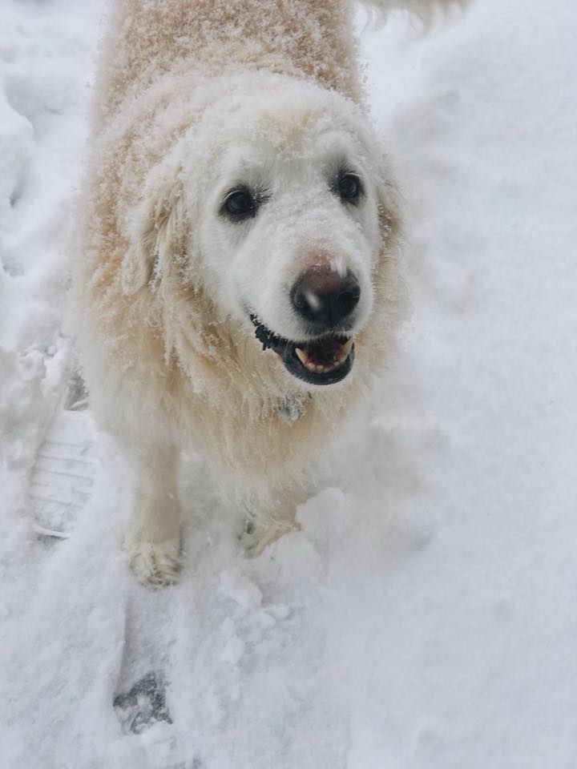

About Me
I am a Computer Science student at the University of Massachusetts Lowell, going into my 4th year. I am from Milford Massachusetts and I enjoy cooking and trying new types of whisky/ey. I watch a lot of youtube videos when I want to learn something new, especially in cooking. One of my favorite channels is Bon Appetit. This is an image of my pet dog, Cooper. He is a Golden Retriever and is currently 13 years old!
Classes Taken
- Computing I- Computing IV
- Assembly Language Programming
- Organization of Programming Languages
- Foundations of Computer Science
- Analysis of Algorithms
- Graphic User Interface
- Computer Architecture
- Machine Learning
Work Experience
- I have worked at two companies so far. The first company I worked for was Under Armour®, where I was a sales associate. This just means that I assisted customers with finding the clothes that they wanted.
- The second company I worked for was called Consigli Construction Co©, where I worked as as an IT intern. In this position, I performed many tasks such as assigning tickets, solving tickets and many other side projects. Some of these side projects included setting up a computer for VR capabilities, initializing the computers for the other interns and new hires.
Goals:
- Gain experience through the GUI course at UMass Lowell, in programming in HTML, CSS, JavaScript and JQuery. Also learn how to perform the basics of web design.
- Become proficient in the Chinese language (Mandarin) to the best of my abilities within Chinese 1 and Chinese 2 courses at UML.
- Start my career as a computer scientist doing something in web design.